| Client | Rhénatech (entreprise fictive), Colmar |
| Interlocutrice | Claire Fischer, responsable infrastructure |
| Groupe | Corentin Friedmann · [Prénom Nom] · [Prénom Nom] |
| Adresse du service | https://wiki.rhenatech.lab |
| Plateforme | k3s v1.35.10 · BookStack v26.09.2 · MariaDB 11.8.9 |
| Dépôt | github.com/corentinfriedmann/sae11 (branche de travail) |
| Version | v1.0 du 26/11/2026 · remise le 20/01/2027 · soutenance le 22/01/2027 |
Objet du document. Ce cahier des charges technique décrit l'infrastructure que nous avons construite pour Rhénatech, les raisons de chaque choix, la manière de la refaire et ce qu'il faut surveiller. Il s'adresse à l'équipe infrastructure de Rhénatech : un technicien qui ne nous connaît pas doit pouvoir réinstaller le service avec ce document et le dépôt Git, sans autre aide.
Le problème. La documentation de Rhénatech était éparpillée : procédures en PDF envoyées par courriel, fiches clients sur un partage réseau, schémas dans des boîtes mail. En septembre, un prestataire a appliqué de nuit une procédure périmée dans une clinique : quatre heures de coupure du réseau des urgences. La direction a décidé une base documentaire unique, hébergée en interne et conteneurisée, avec deux publics bien séparés.
Ce que nous avons livré. Une maquette fonctionnelle de BookStack et MariaDB orchestrés par Kubernetes (k3s),
accessible en HTTPS sur wiki.rhenatech.lab. Les prestataires y ont des comptes nominatifs protégés par
une double authentification TOTP et ne voient que les procédures d'intervention et les fiches des clients qui
leur sont attribués. L'ensemble se déploie de zéro avec une seule commande, ./scripts/deploy.sh, se
sauvegarde chaque nuit, se restaure en moins de deux minutes et se met à jour avec retour arrière possible.
Méthode. Le projet a suivi les sept jalons validés avec Claire Fischer (cadrage, socle, déploiement,
sécurité, exploitation, recette, finalisation). Le dossier a été écrit au fil de l'eau, un fichier par partie
dans docs/. Chaque exigence a un test automatisé : la recette R1 à R12 est rejouable par
./scripts/recette.sh et produit un journal daté.
| Jalon | Contenu | Preuve |
|---|---|---|
| 1 · Cadrage | Reformulation du besoin, architecture logique et physique, dépôt Git | Note de cadrage validée (docs/00-cadrage.md) |
| 2 · Socle infra | Cluster k3s, namespace, Ingress et certificat HTTPS, ConfigMap/Secret, PVC | R1 |
| 3 · Déploiement | Images versionnées, sondes readiness/liveness, NetworkPolicy, premier accès | R7, R8 |
| 4 · Rôles et sécurité | Profils Administrateur/Éditeur/Lecteur/Prestataire, cloisonnement, TOTP, journal d'audit | R2 à R5 |
| 5 · Exploitation | CronJob de sauvegarde, restauration chronométrée, mise à jour et retour arrière | R6, R10, R11, R12 |
| 6 · Recette | Exécution de R1 à R12, rédaction du cahier des charges | Journal de recette (annexe E) |
| 7 · Finalisation | Relecture, diaporama, répétition de la démonstration | Ce dossier, la soutenance |
Rhénatech (140 salariés, Colmar) maintient les réseaux, serveurs et postes de 60 clients : collectivités, PME, deux cliniques. Ses astreintes de nuit et de week-end reposent sur 25 techniciens de trois sous-traitants, qui interviennent au nom de Rhénatech avec ses procédures. Quatre profils d'utilisateurs sont prévus :
| Profil | Qui | Nombre | Ce qu'ils voient et font | TOTP |
|---|---|---|---|---|
| Administrateur | Direction infrastructure | 3 | Tout, dont comptes, rôles et journal d'audit | obligatoire |
| Éditeur | Techniciens Rhénatech | 35 | Créer et modifier pages internes et procédures | — |
| Lecteur | Autres salariés | 102 | Lire et chercher | — |
| Prestataire | Techniciens sous-traitants | 25 | Procédures d'intervention et fiches de leurs clients, rien d'autre | obligatoire |
| Code | Besoin | Priorité | Notre réponse | Test |
|---|---|---|---|---|
| B1 | Wiki en HTTPS sur wiki.rhenatech.lab | Indisp. | Ingress Traefik, certificat signé par une autorité interne, TLS ≥ 1.2 (1.3 négocié), HSTS, HTTP redirigé en 301 | R1 |
| B2 | Trois profils internes | Indisp. | Rôles Administrateur, Éditeur, Lecteur, créés et réglés par script (rôles par défaut renommés) | R2 |
| B3 | Prestataire cloisonné | Indisp. | Rôle Prestataire sans aucune permission de rôle + un rôle « Accès client – X » par client ; droits posés livre par livre | R3 |
| B4 | Comptes nominatifs, désactivés en fin de contrat | Indisp. | Un compte par technicien ; disable-user.sh retire les rôles, invalide le mot de passe, supprime MFA et sessions | R4 |
| B5 | TOTP obligatoire prestataires et admins | Indisp. | Option « authentification multifacteur obligatoire » sur Administrateur, Prestataire et rôles d'accès client | R4 |
| B6 | Journal d'audit | Indisp. | Journal natif de BookStack : connexions, créations, modifications, suppressions, changements de droits, avec IP | R5 |
| B7 | Structure de départ | Indisp. | Étagères Interne, Procédures d'intervention, Clients ; 3 livres clients ; 9 pages réelles dont « Restaurer le wiki » | init |
| B8 | Recherche, pièces jointes de 20 Mo | Indisp. | Limite BookStack 25 Mo, PHP 25/30 Mo ; Traefik ne limite pas ; recherche filtrée par les droits | R6 |
| B9 | Volumes pour trois ans | Indisp. | PVC fichiers 15 Gi, base 5 Gi, sauvegardes 30 Gi (80 Gi en année 3) ; requests et limits (§ 1.1) | — |
| B10 | Disponibilité : rien perdu au redémarrage | Indisp. | Données sur PVC, sondes, redémarrage automatique par Kubernetes | R7 |
| B11 | Sauvegarde quotidienne, RPO 24 h, RTO 4 h | Indisp. | CronJob à 02:00, export hors cluster, restauration complète mesurée en 87 s | R10 |
| B12 | RGPD | Indisp. | Données minimales, aucun appel externe, journal purgé à 365 jours, registre en annexe A | Ann. A |
| B13 | Mise à jour sans perte, retour arrière, état en 1 min | Indisp. | upgrade.sh (sauvegarde puis image), rollback.sh (image + restauration), status.sh (1,1 s) | R11, R12 |
| B14 | Réversibilité | Souhaité | Export HTML/PDF/Markdown natif ; réinstallation complète depuis le dépôt seul (annexe D) | R10 |
| B15 | Annuaire LDAP / OIDC | Souhaité | Non réalisé : partie 9 | — |
| B16 | Courriels | Souhaité | Non réalisé : courriels journalisés (MAIL_DRIVER=log), Mailpit prévu (partie 9) | — |
Hypothèses à trois ans : 5 000 pages, 10 Go de pièces jointes, 165 comptes, 40 connexions simultanées.
| Ressource | Calcul | Retenu |
|---|---|---|
Fichiers (/config) | 10 Go de pièces jointes + 50 % de marge (images des pages, croissance) | PVC 15 Gi |
| Base de données | 5 000 pages × 20 Ko (HTML + Markdown) × 10 révisions en moyenne ≈ 1 Go (plafond REVISION_LIMIT=50) ; index de recherche ≈ 0,5 Go ; journal d'audit ≈ 2 000 évènements/jour × 365 j × 200 o ≈ 150 Mo | PVC 5 Gi (marge × 2) |
| Sauvegardes | 7 jours × (dump compressé ≤ 0,5 Go + archive des fichiers) : ≈ 25 Go en année 1 (3 Go de fichiers), ≈ 75 Go en année 3 | PVC 30 Gi, 80 Gi en année 3 |
| BookStack | 40 requêtes PHP simultanées × 25 Mo ≈ 1 Go au pic ; mesuré au repos : 84 Mio | req. 250m / 384 Mi · lim. 1 CPU / 1 Gi |
| MariaDB | Buffer pool 256 Mo + 100 connexions max ; mesuré au repos : 141 Mio | req. 250m / 512 Mi · lim. 1 CPU / 1 Gi |
| VM | Requests totales ≈ 0,6 CPU / 1 Gi + k3s ≈ 0,5 Gi + système | 2 vCPU, 4 Go, 40 Go disque |
Chaque ligne correspond à une NetworkPolicy de k8s/networkpolicies.yaml. Tout ce qui n'y figure pas est refusé.
| Source | Destination | Port | Pourquoi | Contrôle |
|---|---|---|---|---|
| Postes | Traefik (nœud) | 443, 80/TCP | Accès au wiki ; 80 ne fait que rediriger | Ingress wiki, wiki-http-redirect |
| Traefik (kube-system) | bookstack | 80/TCP | Proxy inverse (TLS terminé par Traefik) | bookstack-from-traefik |
| bookstack | mariadb | 3306/TCP | Base de l'application | bookstack-to-mariadb, mariadb-from-clients |
| Jobs sauvegarde, restauration, purge | mariadb | 3306/TCP | Exploitation (exception justifiée) | jobs-to-mariadb, mariadb-from-clients |
Tous les pods de wiki | CoreDNS | 53/UDP+TCP | Résolution de noms | allow-dns-egress |
| Tout le reste, dont Internet | — | — | Refusé | default-deny-all |
BookStack n'a aucune sortie vers Internet : l'appel à Gravatar est coupé (AVATAR_URL=false) et les
courriels sont journalisés. État réel du namespace après déploiement :
$ kubectl -n wiki get pods,svc,pvc,ingress
pod/bookstack-84fb95b466-t4ttb 1/1 Running 10.42.0.167
pod/mariadb-0 1/1 Running 10.42.0.165
service/bookstack ClusterIP 10.43.43.105 80/TCP
service/mariadb ClusterIP None 3306/TCP # headless
persistentvolumeclaim/bookstack-config Bound 15Gi RWO local-path
persistentvolumeclaim/data-mariadb-0 Bound 5Gi RWO local-path
persistentvolumeclaim/wiki-backups Bound 30Gi RWO local-path
ingress/wiki traefik wiki.rhenatech.lab 80, 443
ingress/wiki-http-redirect traefik wiki.rhenatech.lab 80Pour chaque décision importante : ce que nous avons retenu, l'alternative écartée et la raison, rapportée au contexte de Rhénatech (une maquette sur une VM de 4 Go, 165 comptes, un usage de nuit par des prestataires).
| Question | Notre choix | Écarté | Pourquoi |
|---|---|---|---|
| Orchestrateur | k3s v1.35 | kubeadm, Docker Compose | Un seul binaire, ~512 Mo de RAM. Traefik, stockage local-path, metrics-server et NetworkPolicy (kube-router) sont fournis : rien à ajouter sur une VM de 4 Go. Compose n'est accepté que comme étape. |
| Outil de déploiement | Kustomize (kubectl apply -k) + script | Helm (option O1) | Intégré à kubectl, manifestes lisibles tels quels. Le générateur de ConfigMaps ajoute un hachage au nom : toute modification de configuration redéploie BookStack. Helm apporterait un paramétrage multi-environnements inutile ici. |
| Image BookStack | lscr.io/linuxserver/bookstack v26.09.2-ls296 | Image tierce, image maison | La plus suivie, publiée à chaque version, migre le schéma au démarrage. L'étiquette vX-lsN désigne un build précis (« version-vX » bouge à chaque rebuild). Contrepartie : démarre en root, d'où Pod Security « baseline ». |
| Image MariaDB | mariadb:11.8.9 (LTS) | MySQL 8, MariaDB 12 | Image officielle, support long jusqu'en 2028, script healthcheck.sh intégré pour les sondes. |
| Objet pour MariaDB | StatefulSet (1 réplica) + Service headless | Deployment + PVC | Identité stable mariadb-0 ; PVC créé par volumeClaimTemplates et conservé si la StatefulSet est supprimée ; jamais deux pods sur le volume. À un réplica l'écart est faible, mais la donnée est mieux protégée et une réplication reste possible. |
| Objet pour BookStack | Deployment, stratégie Recreate | RollingUpdate | RollingUpdate lancerait le nouveau pod avant d'arrêter l'ancien : deux pods sur un volume RWO et deux migrations de schéma concurrentes. Recreate coûte ~15 s de coupure par mise à jour (mesuré). |
| Stockage | local-path (PVC RWO) | NFS, Longhorn | Fourni par k3s, performances du disque local. Longhorn demande ~1 Go de RAM par nœud et trois nœuds ; NFS un serveur de plus. Le prix : volume lié au nœud (partie 5). |
| Exposition | Ingress Traefik + TLSOption + Middlewares | NodePort, ingress-nginx | Contrôleur déjà présent dans k3s ; aucune limite de taille de requête (pièces de 20 Mo). |
| Certificat | Autorité interne générée par script (ECDSA P-256, CA 10 ans, serveur 397 j) | Let's Encrypt, auto-signé seul, cert-manager (O6) | ACME (RFC 8555) exige un nom public : impossible en .lab. Une autorité (RFC 5280) s'importe une fois sur les postes et signe les certificats suivants, contrairement à un certificat auto-signé isolé. |
| Secrets | Secret Kubernetes créé par script depuis .secrets/ (hors Git) | Sealed Secrets, SOPS, Vault | Aucun outil de plus pour une maquette ; secret.exemple.yaml documente la forme avec des valeurs factices. |
| Sauvegarde | CronJob : mariadb-dump --single-transaction + archive de /config, 7 jours, export hors cluster | Velero, instantané de volume | Dump logique cohérent sans arrêt du service, restaurable sur une autre version de MariaDB, lisible et vérifiable (sha256). Velero demande un stockage objet (option A2). |
| Cloisonnement | Rôle Prestataire sans droit + un rôle par client, droits livre par livre | Un rôle par sous-traitant ; droits par étagère | Les droits d'une étagère ne descendent pas à ses livres dans BookStack. Un rôle par client suit l'énoncé (« les clients qui lui sont attribués ») : deux techniciens d'un même sous-traitant peuvent avoir des clients différents. Par défaut un prestataire ne voit rien. |
| Double authentification | TOTP natif, obligatoire par rôle | OIDC + MFA (O2) | Natif, sans composant supplémentaire, conforme à la RFC 6238. |
| Désactivation | Script (rôles retirés, mot de passe aléatoire, MFA et sessions supprimés) | Suppression du compte | BookStack n'a pas d'état « désactivé ». Supprimer le compte rendrait le journal moins lisible ; on le neutralise et on le garde. Sessions en base pour pouvoir les couper. |
| Configuration de BookStack | Script d'API idempotent | Clics dans l'interface | Reproductible (R10), relu, rejouable sans doublon. Le jeton d'API est temporaire (créé en base, supprimé en fin de script). |
sae11/
├── README.md, Makefile installer · exploiter · raccourcis make
├── k8s/ kubectl apply -k k8s/
│ ├── kustomization.yaml images épinglées, ConfigMaps générées (hachage)
│ ├── namespace.yaml namespace wiki, Pod Security baseline
│ ├── mariadb.yaml StatefulSet + Service headless + PVC 5 Gi
│ ├── bookstack.yaml Deployment Recreate + Service + PVC 15 Gi
│ ├── ingress.yaml Ingress HTTPS, redirection 80→443, HSTS, TLS ≥ 1.2
│ ├── networkpolicies.yaml refus par défaut + 5 flux autorisés
│ ├── backup.yaml CronJob sauvegarde + CronJob purge RGPD + PVC 30 Gi
│ └── config/ bookstack.env · php-local.ini · mariadb.cnf · backup.sh · purge-audit.sh
├── scripts/ deploy · gen-secrets · init-bookstack · status · backup-now
│ backup-export · restore · upgrade · rollback · disable-user
│ recette · r10-disaster · destroy · totp.py
├── secrets/secret.exemple.yaml forme des Secrets, valeurs factices
└── docs/ cadrage, cahier des charges, recette, oral, ce rapport
(.secrets/ et backups/ : générés localement, ignorés par Git)# 1. Sur la VM : k3s à une version précise, horloge synchronisée (le TOTP en dépend)
curl -sfL https://get.k3s.io | INSTALL_K3S_VERSION=v1.35.10+k3s1 sh -
sudo timedatectl set-ntp true
# 2. Sur le poste d'administration : copier /etc/rancher/k3s/k3s.yaml (adresse 192.168.56.10)
# 3. Tout le reste, en une commande :
./scripts/deploy.shdeploy.sh enchaîne cinq étapes, en 86 secondes mesurées sur un cluster vierge :
| # | Étape | Détail |
|---|---|---|
| 1 | Secrets locaux | gen-secrets.sh : APP_KEY (« base64: » + 32 octets aléatoires), mots de passe MariaDB, autorité interne et certificat de wiki.rhenatech.lab, dans .secrets/. Rien n'est régénéré s'il existe déjà. |
| 2 | Namespace | kubectl apply -f k8s/namespace.yaml |
| 3 | Secrets Kubernetes | wiki-secrets et wiki-tls créés par kubectl create … --dry-run=client -o yaml | kubectl apply -f - (idempotent) |
| 4 | Manifestes | kubectl apply -k k8s/ puis attente des sondes (rollout status) |
| 5 | Configuration de BookStack | init-bookstack.sh : rôles, TOTP, étagères, livres, pages, permissions, comptes (via l'API REST) |
# bookstack.yaml : secrets par référence, sondes adaptées à la migration du schéma
envFrom: [{ configMapRef: { name: bookstack-env } }] # APP_URL, DB_HOST, limites…
env:
- { name: APP_KEY, valueFrom: { secretKeyRef: { name: wiki-secrets, key: APP_KEY } } }
startupProbe: { httpGet: { path: /status, port: http }, failureThreshold: 36 } # jusqu'à 6 min de migration
readinessProbe: { httpGet: { path: /status, port: http } } # base + cache + session
livenessProbe: { tcpSocket: { port: http } } # ne dépend PAS de la baseLa sonde de vie ne teste pas la base : si MariaDB tombe, BookStack devient « non prêt » (retiré du Service) mais n'est pas redémarré en boucle, et il revient seul avec la base. La sonde de démarrage laisse six minutes à BookStack pour migrer son schéma après une mise à jour.
# ingress.yaml : HTTPS seul, TLS 1.2 minimum, HSTS
traefik.ingress.kubernetes.io/router.entrypoints: websecure
traefik.ingress.kubernetes.io/router.tls.options: wiki-tls-modern@kubernetescrd # minVersion VersionTLS12
traefik.ingress.kubernetes.io/router.middlewares: wiki-security-headers@kubernetescrd # HSTS 1 an
# kustomization.yaml : jamais latest
images:
- { name: lscr.io/linuxserver/bookstack, newTag: v26.09.2-ls296 }
- { name: mariadb, newTag: 11.8.9 }Réalisée par scripts/init-bookstack.sh via l'API REST. Le script est rejouable : ce qui existe déjà
est mis à jour, jamais dupliqué. L'administrateur par défaut admin@admin.com / password est
renommé et reçoit un mot de passe aléatoire dès le déploiement.
| Rôle | Permissions de rôle | TOTP | Comptes de démonstration |
|---|---|---|---|
| Administrateur (rôle système) | Toutes | oui | admin@rhenatech.lab, claire.fischer@rhenatech.lab |
| Éditeur | Créer, modifier, supprimer contenus, pièces jointes, commentaires | non | editeur@rhenatech.lab |
| Lecteur | Voir tout, exporter | non | lecteur@rhenatech.lab |
| Prestataire | Aucune | oui | tech1@alpha-reseaux.example, tech1@beta-systemes.example |
| Accès client – X (×3) | Aucune (sert d'étiquette d'accès) | oui | Alpha → Clinique des Tilleuls · Beta → Commune de Val-d'Ill + Brasserie Lauch |
| Public (anonyme) | Aucune | — | Inscription publique fermée |
| Contenu | Permissions posées (les autres rôles gardent leurs droits de rôle) |
|---|---|
| Étagère Interne ; livres Exploitation du wiki, Ressources humaines, Commercial | Refus explicite à Prestataire et aux 3 rôles d'accès client (défense en profondeur) |
| Étagère Procédures d'intervention ; livre Procédures réseau | Lecture seule pour Prestataire |
| Étagère Clients | Lecture pour Prestataire (l'étagère, pas ses livres) |
| Livre Client – X | Lecture seule pour le rôle « Accès client – X » uniquement |
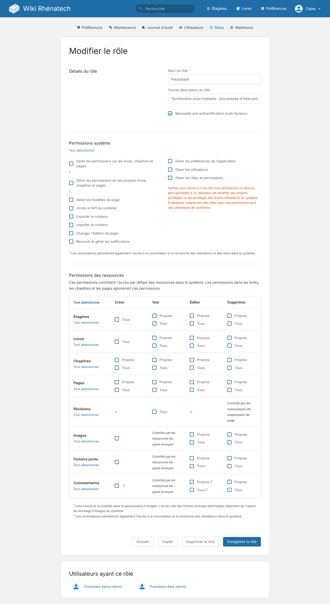
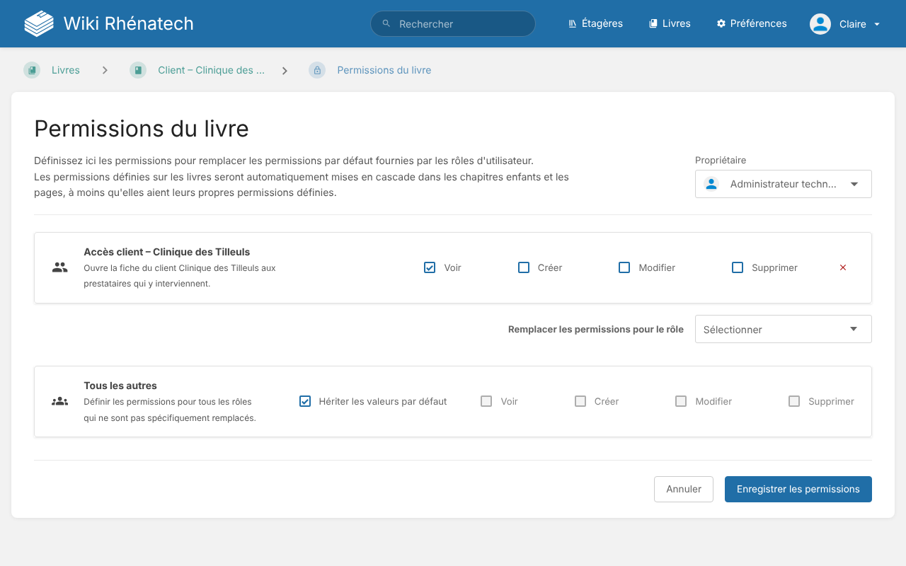
Visibilité calculée par le moteur de permissions de BookStack (table joint_permissions, statuts
« autorisé ») pour les deux prestataires de démonstration :
tech1@alpha-reseaux.example étagères : Clients, Procédures d'intervention
livres : Client – Clinique des Tilleuls, Procédures réseau
tech1@beta-systemes.example étagères : Clients, Procédures d'intervention
livres : Client – Brasserie Lauch, Client – Commune de Val-d'Ill,
Procédures réseau
# ni Interne, ni Commercial, ni RH, ni les clients des autres — et la recherche ne les renvoie pasAjouter un prestataire : Paramètres › Utilisateurs › Ajouter un utilisateur, courriel nominatif, rôles
Prestataire + Accès client – <ses clients>. À sa première connexion, BookStack lui impose d'enrôler
son application TOTP. Ajouter un client : compléter la liste CLIENTS du script et le relancer.
.secrets/wiki-secrets.env (hors Git, à copier dans un coffre hors ligne) et jamais régénérée par un
redéploiement. Vérifié : après la restauration complète (R10), le TOTP du prestataire fonctionne toujours.https://wiki.rhenatech.lab, sans barre finale. Une autre
adresse (IP, http, port) donne des redirections en boucle, des images cassées et des liens faux. Changer d'adresse
après coup se fait avec php artisan bookstack:update-url. Traefik termine le TLS :
APP_PROXIES=10.42.0.0/16 fait confiance à ses en-têtes.--single-transaction lit un instantané InnoDB cohérent sans bloquer les
écritures ; les fichiers sont archivés juste après. Une pièce jointe ajoutée entre les deux peut exister sans sa
ligne en base (fichier orphelin, sans gravité). Piège rencontré : en sh, mariadb-dump | gzip
« réussit » même si le dump échoue. Le script tourne en bash avec pipefail et vérifie la
ligne finale -- Dump completed.mariadb-admin ping, 60 s au plus). Après un « tout refusé », il faut aussi penser au DNS (53 UDP et TCP).upgrade.sh la prend et la note, rollback.sh l'utilise. Ce qui a été modifié entre
les deux est perdu : il faut décider vite.timedatectl sur la VM, puis l'heure de son téléphone.listen [::]:80. Le script d'initialisation 10-rhenatech-init.sh retire alors l'écoute IPv6.FILE_UPLOAD_SIZE_LIMIT, en Mo),
PHP (upload_max_filesize, post_max_size) et le proxy (Traefik : aucune limite ; ingress-nginx :
proxy-body-size). Testé : 15 Mo acceptés, 25 Mo refusés proprement (HTTP 422).| Domaine | Mesure |
|---|---|
| Flux | Refus par défaut en entrée et en sortie dans wiki ; seuls les flux de la matrice 2.3 sont ouverts. Testé : un pod sans étiquette autorisée ne joint pas MariaDB (R8). |
| Chiffrement | HTTPS seul (HTTP redirigé en 301, RFC 9110) ; TLS 1.2 minimum, TLS 1.3 négocié (RFC 8446) ; HSTS d'un an (RFC 6797) ; sniStrict. |
| Certificats | Autorité interne ECDSA P-256 (CA:TRUE, pathlen:0), certificat serveur de 397 jours avec SAN et usage serverAuth (RFC 5280) ; clés privées hors Git. |
| Secrets | Secret Kubernetes référencé par secretKeyRef ; mot de passe root MariaDB connu de MariaDB et du seul job de restauration ; mots de passe passés par la variable MYSQL_PWD (absents de la liste des processus) ; .secrets/ en 0700, ignoré par Git ; contrôle R9. |
| Authentification | Comptes nominatifs ; TOTP obligatoire pour Administrateur, Prestataire et rôles d'accès client (RFC 6238) ; compte par défaut neutralisé ; inscription publique et accès anonyme fermés ; cookie de session Secure. |
| Autorisation | Prestataire sans droit de rôle, accès ouvert livre par livre ; refus explicite sur Interne. |
| Fin de contrat | disable-user.sh : effet immédiat (rôles retirés, sessions supprimées) ; le compte reste lisible dans le journal. |
| Traçabilité | Journal d'audit (connexions, contenus, droits, comptes, adresse IP), réservé aux administrateurs (figure 9). |
| Pods | seccomp RuntimeDefault, allowPrivilegeEscalation: false, jeton de compte de service non monté ; MariaDB et jobs en non-root avec toutes les capacités retirées ; namespace en Pod Security baseline imposé et restricted en audit. |
| Images | Officielles, épinglées, jamais latest. |
Le wiki contient : nom, courriel professionnel, rôles, empreinte bcrypt du mot de passe, secret TOTP (chiffré par
l'APP_KEY), adresse IP et date des connexions et actions (journal d'audit), sessions. Aucune donnée client
sensible dans les pages d'exemple : clients fictifs, aucun nom de personne, aucun numéro. BookStack n'envoie rien
à l'extérieur (pas d'avatar Gravatar, aucune sortie réseau).
| Donnée | Durée de conservation | Mise en œuvre |
|---|---|---|
| Journal d'audit | 365 jours | CronJob wiki-audit-purge chaque dimanche |
| Compte prestataire | Désactivé le jour de la fin de contrat, supprimé un an après | disable-user.sh, puis suppression dans l'interface |
| Compte salarié | Supprimé au départ (contenus réattribués) | Interface d'administration |
| Sauvegardes | 7 jours sur le cluster ; 30 jours conseillés pour les exports | Rétention du script de sauvegarde |
Le registre de traitement complet (article 30 du RGPD) est en annexe A.
| Geste | Comment | Mesuré |
|---|---|---|
| Sauvegarde | CronJob wiki-backup à 02:00 (Europe/Paris) : dump cohérent + archive de /config, sha256, rétention 7 jours (RPO ≤ 24 h). À la demande : ./scripts/backup-now.sh | 3 s (16 Mo) |
| Copie hors cluster | ./scripts/backup-export.sh → backups/AAAAMMJJ-HHMMSS/ sur le poste d'administration, sommes de contrôle vérifiées. À planifier chaque jour et à recopier sur un support externe | — |
| Restauration | ./scripts/restore.sh <sauvegarde> : BookStack arrêté, base supprimée et rechargée, /config réextrait, redémarrage, chronomètre | 20 s sur place · 61 s depuis un export |
| Reprise après sinistre | Namespace supprimé → deploy.sh --no-init → restore.sh backups/… (r10-disaster.sh) | 87 s (exigé : 4 h) |
| Mise à jour | ./scripts/upgrade.sh v26.09.3-ls301 : sauvegarde, nouvelle image, attente des sondes, contrôle /status ; reporter ensuite l'étiquette dans kustomization.yaml | 15 s de coupure |
| Retour arrière | ./scripts/rollback.sh : ancienne image + restauration de la sauvegarde d'avant mise à jour | 23 s |
| Supervision | ./scripts/status.sh : pods, PVC, Ingress, kubectl top, /status, échéance du certificat, dernières sauvegardes, journaux, événements | 1,1 s |
| Fin de contrat | ./scripts/disable-user.sh <courriel> | immédiat |
| Certificat | Supprimer .secrets/tls/tls.* puis relancer deploy.sh : même autorité, nouveau certificat | — |
$ ./scripts/status.sh # extrait
== Santé applicative (https://wiki.rhenatech.lab/status) ==
{"database":true,"cache":true,"session":true} (HTTP 200, 0.03s)
== Consommation ==
bookstack-84fb95b466-t4ttb 2m 84Mi
mariadb-0 4m 141Mi
== Certificat ==
subject=O=Rhenatech, CN=wiki.rhenatech.lab notAfter=Dec 27 2027À surveiller chaque semaine : échec d'un job wiki-backup (kubectl -n wiki get jobs),
espace disque de la VM (local-path ne plafonne pas les volumes), échéance du certificat, avis de sécurité de BookStack.
Réinstallation complète (B14) : une VM avec k3s, ce dépôt, le dossier .secrets/ (coffre) et un
export suffisent (annexe D). Les contenus sont aussi exportables par BookStack (livre › Exporter : HTML, PDF, Markdown).
Exécutée par ./scripts/recette.sh --complet. Les tests ouvrent de vraies sessions HTTPS via l'Ingress,
avec de vrais comptes ; le code TOTP est calculé selon la RFC 6238 par scripts/totp.py, comme le ferait
l'application du téléphone. Journal brut en annexe E.
| Test | Ce qu'on vérifie | Commande et preuve | Date | Résultat |
|---|---|---|---|---|
| R1 | Page de connexion en HTTPS | Titre « Wiki Rhénatech » ; openssl s_client : TLSv1.3, chaîne vérifiée par l'autorité interne ; HSTS présent ; HTTP → 301 | 25/11 | OK |
| R2 | Un lecteur ne modifie rien | lecteur@ : GET …/edit → 302 ; PUT forcé → updated_at inchangé | 25/11 | OK |
| R3 | Prestataire cloisonné | Procédures et sa clinique → 200 ; deux autres clients, Commercial, RH, Exploitation, étagère Interne → 404 ; recherche « tarif » → 0 résultat | 25/11 | OK |
| R4 | TOTP obligatoire ; compte désactivé | Mot de passe seul → /mfa/verify, contenu inaccessible ; code décalé de 120 s → refusé ; bon code → accès ; après disable-user.sh : connexion refusée, session ouverte coupée | 25/11 | OK |
| R5 | Journal d'audit | editeur@ modifie « Basculer sur le lien WAN de secours » → entrée page_update par editeur@ | 25/11 | OK |
| R6 | Pièce jointe de 15 Mo | Dépôt HTTPS, relecture identique (sha256), page retrouvée par la recherche ; 25 Mo refusé (422) | 25/11 | OK |
| R7 | Pods supprimés sans perte | kubectl delete pod BookStack puis mariadb-0 : empreinte identique, service revenu seul en 21 s | 25/11 | OK |
| R8 | NetworkPolicy | Pod recette-intrus → MariaDB:3306 refusé ; pod BookStack → joint | 25/11 | OK |
| R9 | Aucun secret dans Git | git grep des valeurs réelles de .secrets/ : aucune ; aucune clé privée ; .secrets/ ignoré | 25/11 | OK |
| R10 | Plateforme vidée et restaurée | Namespace supprimé, deploy.sh --no-init (26 s), restauration de l'export (61 s) : contenus identiques, TOTP valide, pièce de 15 Mo identique ; remise en service 87 s | 25/11 | OK |
| R11 | Mise à jour puis retour arrière | upgrade.sh → v26.09.3, /status OK ; rollback.sh → v26.09.2 + restauration en 23 s, contenus identiques | 25/11 | OK |
| R12 | État en une minute | status.sh en 1,1 s | 25/11 | OK |
Un test qui échoue est un diagnostic, pas un échec caché. Les quatre défauts suivants ont été corrigés puis re-testés :
| Symptôme | Diagnostic | Correction |
|---|---|---|
| Pod BookStack redémarré par la sonde de démarrage | Journaux : nginx: socket() [::]:80 failed (97: Address family not supported) : IPv6 absent sur le nœud | Script d'init qui retire l'écoute IPv6 si besoin |
| « Permissions could not be set » au démarrage | php-local.ini monté en lecture seule dans /config : la remise des droits de l'image échoue | Fichier copié par le script d'init au lieu d'un montage subPath |
| Sauvegarde déclarée « OK » de 4 Ko | Can't connect to server on 'mariadb' (115) : NetworkPolicy pas encore appliquée au pod neuf ; et sh sans pipefail masquait l'échec | Attente de la base, bash + pipefail, contrôle de fin de dump |
| Jeton d'API refusé « expiré » | Colonne api_tokens.expires_at de type DATE (pas DATETIME) | Expiration au lendemain, jeton supprimé en fin de script |
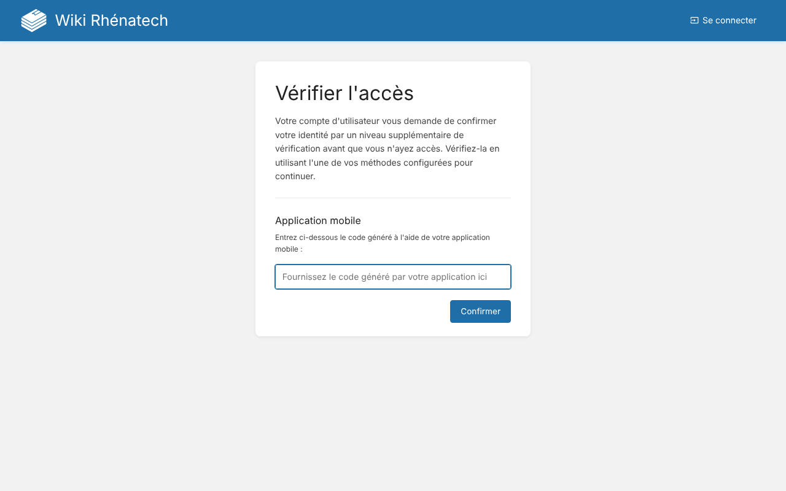
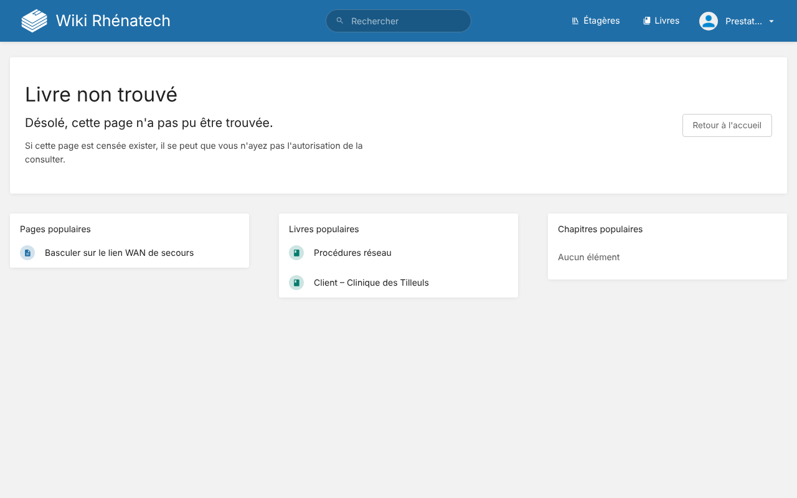
| Ce que nous n'avons pas fait | Ce qu'il faudrait pour la production |
|---|---|
| Un seul pod BookStack, un seul MariaDB, volumes locaux | Trois nœuds, stockage répliqué (Longhorn) ou NFS, deux réplicas BookStack et un PodDisruptionBudget (A3), MariaDB répliqué (Galera ou opérateur). Aujourd'hui, la panne du nœud coûte une restauration (87 s + décision). |
| Sauvegardes sur le disque des données tant que l'export n'est pas fait | Export automatique vers un stockage objet hors plateforme (MinIO, A2) et chiffrement des archives (elles contiennent le .env de l'image). |
| Image BookStack lancée en root | Image non-root, Pod Security « restricted », comptes de service dédiés (O5). |
| Pas d'annuaire (B15) | OIDC avec Keycloak (RFC 6749) ou LDAP avec LLDAP (RFC 4511) pour les salariés ; comptes locaux + TOTP gardés pour les prestataires. |
| Pas de courriel (B16) | Mailpit comme serveur de test (O3), puis le relais SMTP de l'entreprise, avec une NetworkPolicy de sortie vers ce relais. |
| Certificat renouvelé à la main (397 jours) | cert-manager avec un ClusterIssuer adossé à l'autorité interne (O6). |
Supervision minimale (status.sh) | Prometheus + Grafana, alerte testée sur l'échec d'une sauvegarde et sur le disque (O4). |
| Désactivation de compte par script | BookStack n'a pas d'état « désactivé » natif ; avec un annuaire, la désactivation se ferait à la source. |
| Variante trois nœuds non chronométrée | Rejouer R7 et R10 avec arrêt d'un nœud. |
| Référence | Utilisée pour |
|---|---|
| RFC 8446 · TLS 1.3 | Chiffrement de l'accès HTTPS, TLS 1.2 minimum (TLSOption) |
| RFC 9110 · Sémantique HTTP | Redirection permanente 301, codes 302, 404, 422 lus par la recette |
| RFC 6797 · HSTS | Forcer HTTPS côté navigateur (Middleware security-headers) |
| RFC 5280 · Certificats X.509 | Autorité interne, chaîne de confiance, SAN, contraintes de base |
| RFC 8555 · ACME | Pourquoi Let's Encrypt ne convient pas à un nom en .lab |
| RFC 6238 · TOTP / RFC 4226 · HOTP | Double authentification, piège de l'horloge, calcul du code dans totp.py |
| RFC 1918 · Adressage privé | Réseau des VM (192.168.56.0/24) et du cluster (10.42/16, 10.43/16) |
| RFC 2606 · Noms réservés | Domaines .example des comptes prestataires fictifs |
| RFC 4511 · LDAP / RFC 6749 · OAuth 2.0 | Suite prévue pour B15 |
| RGPD, articles 5 et 30 | Minimisation, durée de conservation, registre de traitement |
| Documentation officielle | bookstackapp.com/docs (API, permissions, MFA) · docs.linuxserver.io (image bookstack) · hub.docker.com/_/mariadb · docs.k3s.io (Traefik, local-path, NetworkPolicy) · kubernetes.io/docs (StatefulSet, CronJob, NetworkPolicy, Pod Security) · doc.traefik.io (Middlewares, TLSOption) |
La maquette répond à tous les besoins indispensables B1 à B13 et au besoin souhaité B14. Rhénatech dispose d'une base documentaire unique, hébergée en interne, accessible uniquement en HTTPS, où chaque prestataire, identifié par un compte nominatif et une double authentification, ne voit que les procédures d'intervention et les fiches des clients sur lesquels il intervient. Le scénario de l'incident de septembre (une procédure périmée circulant par courriel) n'a plus de raison d'être : il n'existe qu'une version de chaque procédure, avec son historique et la trace de qui l'a modifiée.
L'infrastructure est entièrement décrite dans le dépôt Git et se reconstruit en une commande. Les chiffres mesurés laissent une marge large par rapport aux exigences : restauration complète en 87 s pour 4 h exigées, état du service en 1,1 s pour une minute exigée, mise à jour avec retour arrière testé.
Les limites sont connues et chiffrées : un seul nœud et des volumes locaux, des sauvegardes à exporter hors plateforme, une image lancée en root, ni annuaire ni courriel. La partie 9 décrit ce qu'il faudrait pour passer en production. Le premier chantier serait le stockage répliqué avec deux réplicas, qui supprimerait le seul point unique de défaillance gênant pour l'astreinte.
Sur le plan pédagogique, le projet nous a fait pratiquer de bout en bout l'orchestration d'une application avec état (AC34.01, AC34.02), le code d'infrastructure (AC35.02), le traitement d'incidents réels rencontrés pendant la recette (AC34.03) et la maîtrise critique du code produit avec l'aide d'une IA (AC35.04, annexe F).
| Rubrique | Contenu |
|---|---|
| Traitement | Base documentaire interne « Wiki Rhénatech » (BookStack) |
| Responsable | Rhénatech, direction ; contact : responsable infrastructure (C. Fischer) |
| Finalités | Mettre à disposition des procédures à jour ; contrôler qui accède à quoi ; tracer les modifications (qualité, analyse après incident) |
| Base légale | Intérêt légitime (sécurité des interventions, art. 6.1.f) ; exécution des contrats de sous-traitance |
| Personnes concernées | Salariés de Rhénatech (140) ; techniciens des sous-traitants (25) |
| Données | Identité : nom, courriel professionnel · Compte : rôles, empreinte bcrypt du mot de passe, secret TOTP chiffré, préférences · Traces : date, adresse IP, action et objet (journal d'audit), sessions · Contenus rédigés (auteur, date) |
| Données exclues | Aucune donnée sensible (art. 9) ; pas de photo (avatars externes désactivés) ; pas de donnée client nominative ; plannings nominatifs d'astreinte tenus hors du wiki |
| Destinataires | Administrateurs (comptes, journal) ; utilisateurs selon leurs droits (nom de l'auteur d'une page) |
| Transferts hors UE | Aucun : hébergement interne, aucun flux sortant (NetworkPolicy) |
| Durées de conservation | Journal d'audit : 365 jours (purge automatique hebdomadaire) · Compte prestataire : désactivé à la fin du contrat, supprimé un an après · Compte salarié : supprimé au départ · Sauvegardes : 7 jours sur le cluster, 30 jours conseillés pour les exports |
| Sécurité | HTTPS (TLS ≥ 1.2), TOTP obligatoire pour administrateurs et prestataires, cloisonnement par rôle, NetworkPolicy, secrets hors Git, sauvegardes vérifiées, journal d'audit |
| Droits des personnes | Accès et rectification via le profil ; effacement sur demande aux administrateurs (compte supprimé, traces purgées au terme de la durée) |
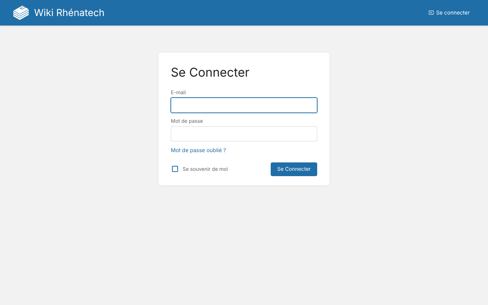
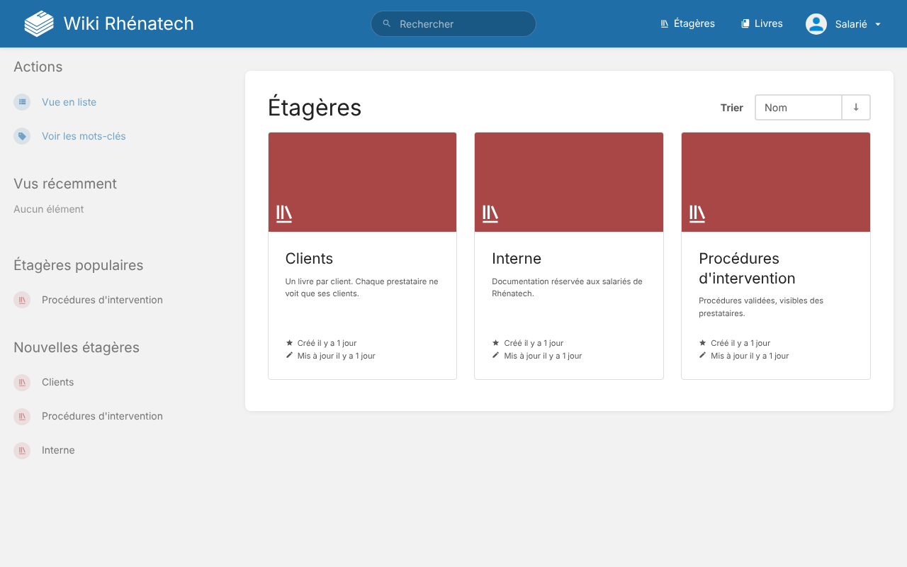
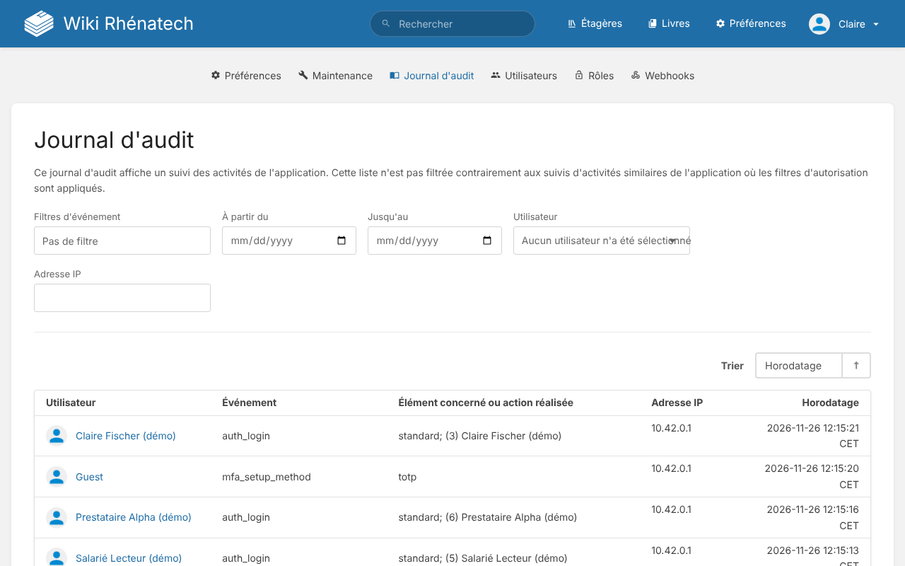
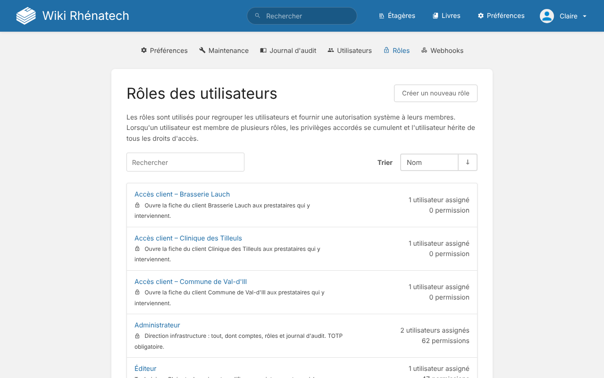
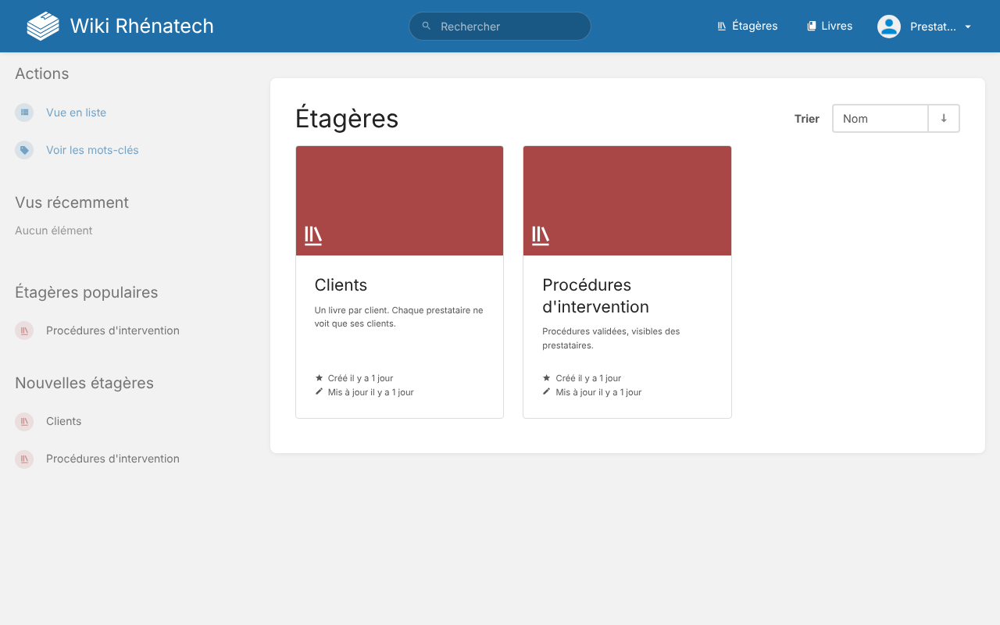
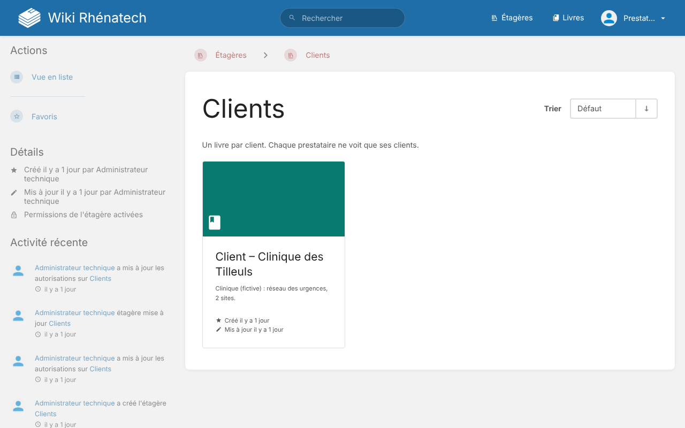
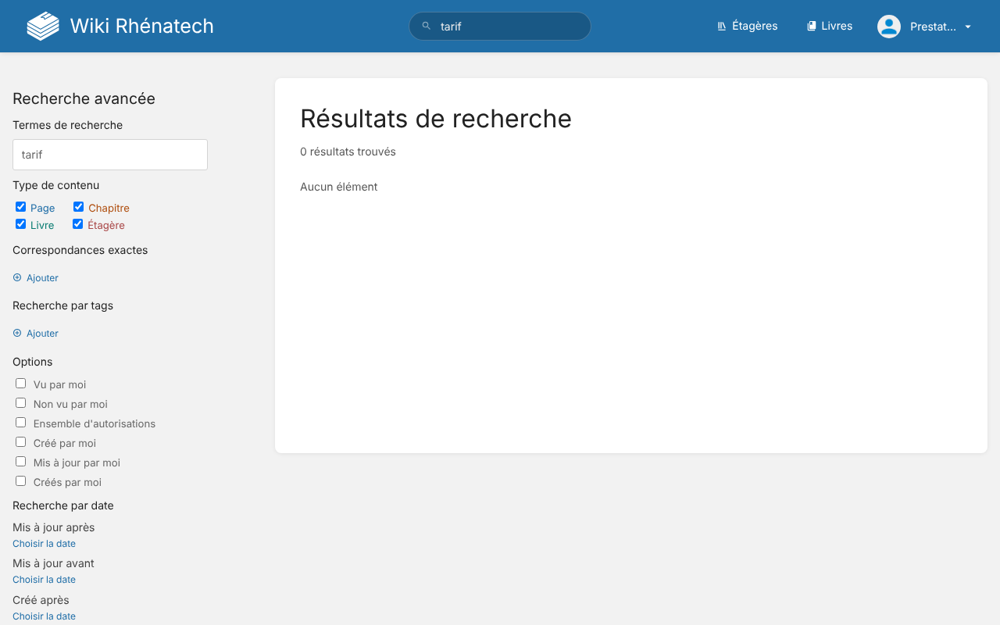
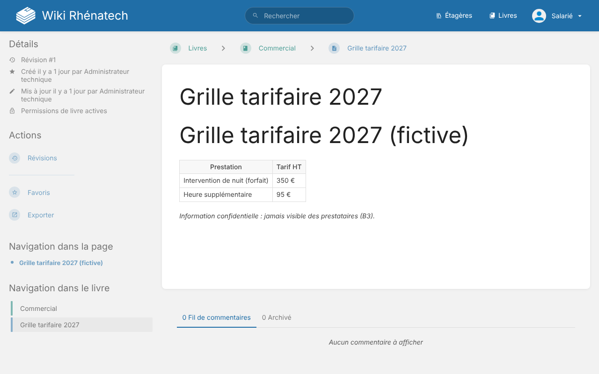
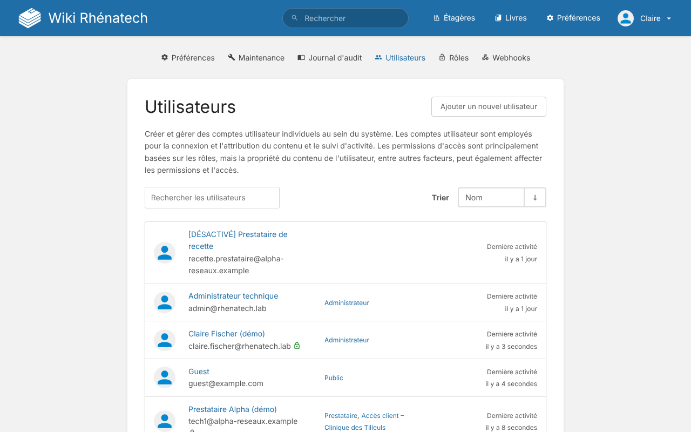
apiVersion: networking.k8s.io/v1
kind: NetworkPolicy
metadata: { name: default-deny-all }
spec: { podSelector: {}, policyTypes: [Ingress, Egress] } # tout est refusé
---
kind: NetworkPolicy
metadata: { name: mariadb-from-clients }
spec:
podSelector: { matchLabels: { app: mariadb } }
policyTypes: [Ingress]
ingress:
- from:
- podSelector:
matchExpressions: [{ key: app, operator: In, values: [bookstack, wiki-backup, wiki-maintenance] }]
ports: [{ protocol: TCP, port: 3306 }]securityContext: { runAsNonRoot: true, runAsUser: 999, fsGroup: 999, seccompProfile: { type: RuntimeDefault } }
env:
- { name: MARIADB_PASSWORD, valueFrom: { secretKeyRef: { name: wiki-secrets, key: DB_PASSWORD } } }
- { name: MARIADB_AUTO_UPGRADE, value: "1" } # mise à jour mineure de MariaDB
readinessProbe: { exec: { command: ["healthcheck.sh", "--connect", "--innodb_initialized"] } }
livenessProbe: { exec: { command: ["healthcheck.sh", "--connect"] } }
resources: { requests: { cpu: 250m, memory: 512Mi }, limits: { cpu: "1", memory: 1Gi } }
volumeClaimTemplates:
- spec: { accessModes: [ReadWriteOnce], storageClassName: local-path, resources: { requests: { storage: 5Gi } } }schedule: "0 2 * * *"
timeZone: Europe/Paris
concurrencyPolicy: Forbid
containers:
- image: mariadb # même version que le serveur
command: ["/bin/bash", "/scripts/backup.sh"]
env: [{ name: MYSQL_PWD, valueFrom: { secretKeyRef: { name: wiki-secrets, key: DB_PASSWORD } } }]
volumeMounts:
- { name: config, mountPath: /config, readOnly: true } # fichiers de BookStack
- { name: backups, mountPath: /backup }set -euo pipefail # un échec du dump fait échouer le job
mariadb-dump -h mariadb -u bookstack --single-transaction --quick --routines --triggers bookstack \
| gzip -6 > "$DEST/bookstack.sql.gz"
zcat "$DEST/bookstack.sql.gz" | tail -1 | grep -q "Dump completed" || fail "dump incomplet"
tar -czf "$DEST/config.tar.gz" -C /config --exclude=./log .
( cd "$DEST" && sha256sum bookstack.sql.gz config.tar.gz > SHA256SUMS ) && touch "$DEST/DONE"
find /backup -maxdepth 1 -type d -name '20*' -mtime +7 -exec rm -rf {} + # rétention 7 joursL'intégralité des manifestes et des scripts est dans le dépôt (k8s/, scripts/), commentée en français.
Scénario : la VM est perdue. Il reste le dépôt Git, le coffre contenant .secrets/ et le dernier export de
sauvegarde. Objectif : service rendu en moins de 4 h (B11). Durée mesurée de la partie Kubernetes : 87 s.
# 1. Nouvelle VM Debian 13 (2 vCPU, 4 Go, 40 Go), réseau hôte 192.168.56.10
curl -sfL https://get.k3s.io | INSTALL_K3S_VERSION=v1.35.10+k3s1 sh -
sudo timedatectl set-ntp true && timedatectl # « System clock synchronized: yes »
# 2. Poste d'administration : kubeconfig, dépôt, secrets d'origine (APP_KEY indispensable)
scp debian@192.168.56.10:/etc/rancher/k3s/k3s.yaml ~/.kube/config # remplacer 127.0.0.1 par 192.168.56.10
git clone <dépôt> sae11 && cd sae11
cp -r /chemin/du/coffre/.secrets . # wiki-secrets.env + tls/
# 3. Socle sans configuration initiale (elle viendra de la sauvegarde)
./scripts/deploy.sh --no-init
# 4. Restauration de l'export
./scripts/restore.sh backups/AAAAMMJJ-HHMMSS
# 5. Contrôles
./scripts/status.sh # /status : database, cache, session à true
./scripts/recette.sh # R1 à R9 et R12Si .secrets/ est perdu : deploy.sh génère une nouvelle APP_KEY. La restauration
fonctionne, mais tous les utilisateurs devront ré-enrôler leur TOTP et l'autorité de certification devra être
redistribuée aux postes. D'où l'importance du coffre.
./scripts/deploy.sh # ≈ 1 min 30 : socle + rôles + étagères + comptes
cat .secrets/comptes-demo.txt # comptes et mots de passe générés (jamais versionnés)
# Poste client : hosts « 192.168.56.10 wiki.rhenatech.lab » + import de .secrets/tls/ca.crtProduit par ./scripts/recette.sh --complet le 25/11/2026 (heures du poste en UTC ; les horodatages de la base sont en heure de Paris).
Fichier : docs/recette/journal-20261125-082049.md.
Cluster : v1.35.10+k3s1 · BookStack : lscr.io/linuxserver/bookstack:v26.09.2-ls296 · MariaDB : mariadb:11.8.9
[R1 OK] page de connexion : titre « Wiki Rhénatech », TLSv1.3, Verify return code: 0 (ok), HSTS, http→https 301
[R2 OK] lecteur : GET /edit → 302, PUT forcé → page inchangée (updated_at 2026-11-25 09:19:58)
[R3 OK] prestataire : procedures-reseau=200 client-clinique-des-tilleuls=200 procedures-dintervention=200
client-commune-de-val-dill=404 client-brasserie-lauch=404 commercial=404
ressources-humaines=404 exploitation-du-wiki=404 interne=404 ; recherche « tarif » : 0
[R4 OK] mot de passe seul → /mfa/verify, contenu → 302 ; code décalé de 120 s → refusé ; bon code → accès ;
après disable-user.sh : connexion → /login, session ouverte → 302
[R5 OK] dernière entrée : 2026-11-25 09:21:12 editeur@rhenatech.lab page_update
[R6 OK] dépôt HTTPS → pièce #3, relue à l'identique (sha256) ; recherche → « Restaurer le wiki »
[R7 OK] empreinte 19/1/8/2026-11-25 09:21:12 → identique, service revenu seul en 21 s
[R8 OK] pod sans label autorisé → REFUSE ; pod BookStack → JOINT
[R9 OK] valeurs réelles retrouvées : aucune ; clés privées : aucune ; .secrets/ ignoré
[R10 OK] destruction 48 s | redéploiement 26 s | restauration 61 s | remise en service 87 s
[R11 OK] après mise à jour : v26.09.3 ; après retour arrière : v26.09.2 (retour arrière terminé en 23 s)
[R12 OK] ./scripts/status.sh en 1.1 s
12 OK, 0 KOLe sujet autorise et conseille l'IA ; ce qui compte est que le résultat soit juste et que chacun sache l'expliquer. Voici comment nous l'avons utilisée, et ce que nous avons vérifié ou corrigé.
| Usage | Ce que l'IA a produit | Ce que nous avons vérifié ou corrigé |
|---|---|---|
| Premier jet des manifestes | Deployment, StatefulSet, Ingress, NetworkPolicy, CronJob | Chaque variable vérifiée dans la documentation de l'image (noms DB_USERNAME, DB_DATABASE de 2024) ; testé sur un vrai cluster |
| Scripts d'exploitation | Sauvegarde, restauration, mise à jour | Sauvegarde déclarée réussie alors que le dump échouait : ajout de pipefail et d'un contrôle de fin de dump |
| Configuration de BookStack | Appels à l'API (rôles, permissions de contenu) | Le premier jet créait un nouveau rôle « Administrateur » au lieu de renommer le rôle système : corrigé ; jeton d'API refusé (colonne DATE) : corrigé |
| Diagnostic | Pistes à partir de journaux d'erreur (sans secret ni donnée réelle) | Panne nginx sur IPv6, NetworkPolicy appliquée en retard aux pods neufs : diagnostiqués et corrigés |
| Rédaction | Premier jet du dossier | Relu, chiffres remplacés par nos mesures, choix reformulés avec nos raisons |
Règles respectées : aucun secret, aucun kubeconfig et aucune donnée réelle n'a été transmis à l'IA ; aucune image
latest ; chaque manifeste et chaque script a été relu ligne par ligne et testé avant d'être versionné.